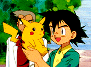

|
|
|
001. Pokémon, I
choose You!

It begins, just like the gameboy, with a black and white Nidorino jumping back and forth
behind a Gengar. Suddenly, the whole thing becomes colorized and three dimensional as we see a
great pokémon battle progressing. It is a league match being broadcasted on the television
belonging to Ash Ketchum: a ten-year old boy from Pallet town who is about to begin his
pokémon training. At his age, he can get a license and become a pokémon trainer! Ash vows to
become the greatest pokémon master of all time!! He starts his training after receiving a
beginner pokémon which will happen tomorrow!!! IF he gets some sleep, informs his mother. But
Ash is too excited to sleep, so his mom has him watch a more informative pokémon show with
Professor Oak teaching Pallet about the three possible pokémon young trainers can receive
tomorrow. They are Bulbasaur, Charmander, and Squirtle. After the program is done, Ash dreams
about which pokémon he will choose. As he dreams of throwing a pokéball to release his
pokémon, he actually throws his own Voltorb alarm clock destroying it. The next morning, Ash
realizes he slept in and runs in his pajamas over to Professor Oak's house to get a pokémon.
Ash arrives to find a crowd of people including a cheerleading squad that cheers for Gary.
Gary promises to make Pallet famous as he becomes the greatest pokémon master. He then insults
Ash about his tardiness and how he chose the best pokémon. But when Ash asks to see the
pokémon, Gary refuses and leaves, taking the crowd with him. Professor Oak wonders how well
prepared Ash is for pokémon training in his pajamas, but Ash convinces Oak that he is ready.
Unfortunately, all three beginner pokémon have been taken by Gary and two others who were on
time. Ash pleads for a pokémon, and Oak does have one left, but "there is a problem with it."
Ash doesn't care and, with the last remaining pokéball, he receives Pikachu. Ash thinks it's
cute and picks it up, which Pikachu greatly dislikes and ash gets shocked. Oak gives Ash his
pokédex and six pokéballs for use. Outside a much less impressive crowd than before has
gathered with Ash's mom to wish him good luck. They wonder, though, why Pikachu isn't in his
pokéball and after a "game of catch," the crowd gets shocked by Pikachu.
So Ash departs with his "new friend" and a lot of items his mom packed for him. As he drags
Pikachu along with a leash and rubber gloves his mom packed, he wishes they could be friends,
but Pikachu acts very aloof and openly shows his distrust of Ash. Ash wants Pikachu to stay in
the pokéball, like the pokédex says, but Pikachu shows that not all pokémon like to stay in a
pokéball. So Ash takes the leash off of him in hopes of gaining his trust... all he gains is
Pikachu running up a tree. Just then, a Pidgey interrupts them and Ash tries to catch it by
throwing a pokéball at it. However, it breaks out, and the pokédex informs Ash that most
trainers use their own pokémon to weaken wild ones for capture. With Pikachu being
uncooperative, Ash has to tries to fight the Pidgey, but is easily beaten by a gust attack.
Both the pokédex and Pikachu believe that Ash will never become a pokémon master. In his
frustration, Ash throws a rock at some Pidgeys. Unfortunately, he hits a Spearow who starts
attacking them. Pikachu shocks it, which causes it to alert a whole flock of Spearows who
begin pecking at Pikachu. Ash grabs the badly hurt Pikachu and is forced to dive down a
waterfall to escape the flock. He is fished out, however, by a young girl named Misty. She
tells him to get Pikachu to the Pokémon Center in Viridian City. Storm clouds gather as the
flock finds them and Ash takes Misty's bike in order to get away, promising to return it "some
day."
Unfortunately, he crashes it as the rain pours down, and both him and Pikachu are vulnerable.
Ash asks Pikachu to get inside the pokéball so that it will be safe while he offers his own
body for the Spearows in order to protect Pikachu. Pikachu sees the care Ash has and gains
enough strength to perform a devastating thunder attack which drives the Spearows away and
destroys everything in the nearby vicinity (including the bike). As the rains part and the sun
comes out, a weakened Pikachu and surprised Ash realize they won. Just then, a mysterious
golden bird flies over the rainbow to which the pokédex informs Ash that there are many
unidentified pokémon in the world. As Ash carries Pikachu into Viridian City, Pikachu licks
Ash's cheek to signify the new bond they share as great friends.
Whos that Pokémon? Pikachu
|
|
|
|